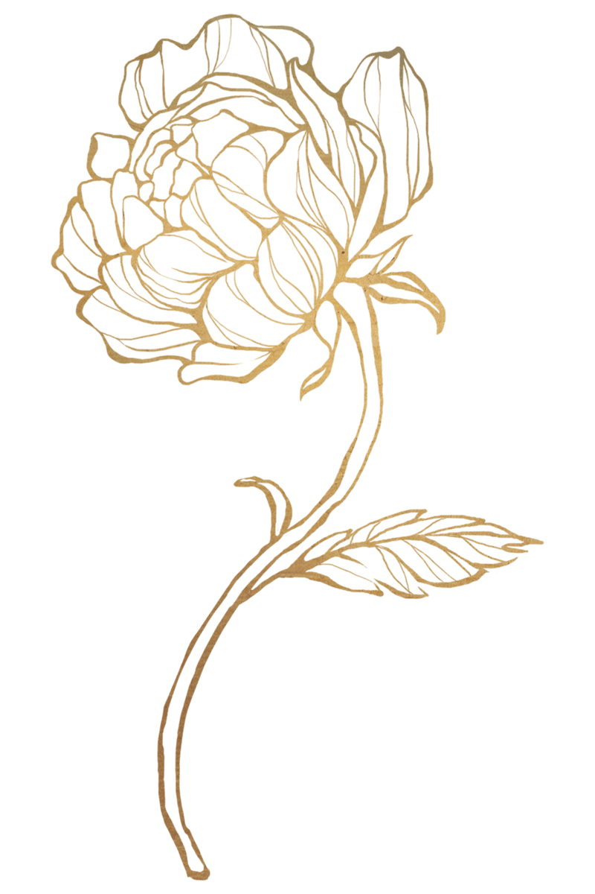

Kateřina Axmannová
KOUČKA ~ MENTORKA
Provázím lidi v situacích, kdy se potřebují zorientovat a rozhodovat se v souladu se sebou.
„Až 95 % našich reakcí vzniká nevědomě a ne vždy v náš prospěch. Zpomalením a poznáním pravdy můžete opustit vnitřní bolest, problémy a žít plnohodnotný život.“
Právě teď můžete začít měnit Váš život k lepšímu.
Co je pro mě v práci s vámi klíčové:
Jdu pod povrch, posvítím na to, co se skrývá
Díváme se na to, co skutečně stojí za Vašimi reakcemi a rozhodnutími.
Vnímám Vás v souvislostech
Pomáhám pojmenovat vzorce, která sami cítíte, ale zatím nejsou jasné.
Propojuji odbornost, praxi a osobní zkušeností
Opírám se o vzdělání, firemní praxi, práci s lidmi a vlastní prožité zkušenosti.
Otázkou není proč, ale JAK
Jak pracuji
Ve své práci propojuji zkušenosti z firemního prostředí s profesionálním koučovacím rámcem a hlubokým vnímáním lidí. Vycházím z poznání, že každý člověk má v sobě schopnost se dobře rozhodovat – jen pod tlakem může ztratit kontakt se sebou.
Vytvářím prostor, kde je možné se zastavit a soustředit pozornost zpět k sobě a vlastnímu vedení.
Kladu trefné a podstatné otázky.
Naslouchám nejen slovům, ale i souvislostem.
Jsem přítomná, bez hodnocení, s upřímným zájmem porozumět.
Spolupráce probíhá jen tam, kam mě pustíte.
Vycházím z koučovacího přístupu, který v případě potřeby a se souhlasem klienta doplňuji o mentoring.
Úvodní setkání zdarma
Slouží k tomu, abychom zjistili, zda je pro Vás spolupráce se mnou užitečná. Probíhá on-line nebo osobně a k ničemu Vás nezavazuje.
Nabídka pro firmy
„Ve firmách pracují lidé. A lidé si do práce nosí život.“
Strategická práce s lidmi jako součást dlouhodobě udržitelného fungování
Well-being koučink
Nabízím firmám individuální koučovací setkání a zaměstnancům bezpečný prostor, kde se mohou zastavit a otevřeně mluvit o libovolně zvoleném tématu, které ovlivňuje jejich pracovní pohodu, soustředění nebo psychickou rovnováhu.
V případě zájmu se můžeme potkat na úvodní schůzce, kde společně probereme možnosti spolupráce.
Více o nabídce pro firmy
Reference
Jak probíhá spolupráce
Vyplníte formulář a domluvíme se na úvodním nezávazném setkání.
Spojíme se online přes Microsoft Teams nebo přes WhatsApp, případně osobně.
Během 30 minut si popovídáme a zjistíme, zda se domluvíme na další spolupráci.

O mně
Jmenuji se Kateřina.
Věřím tomu, že každý člověk má svůj jedinečný příběh, a že společné sdílení je hluboce léčivé.
Ráda pracuji s lidmi v situacích, kdy se ocitají pod dlouhodobým tlakem a potřebují se znovu opřít o vnitřní stabilitu, jasnost a vlastní rozhodování.
Číst více

Otázky a odpovědi
Pokud jste tady, pravděpodobně něco ve Vašem životě není tak, jak by mělo být. Možná situace, které se opakují. Rozhodnutí, které nejde udělat a nebo nevíte, jak. Člověk pod tlakem často nevidí řešení, která jsou jinak dostupná. Koučink nabízí bezpečný prostor zastavit se, podívat se na věci jinak, s odstupem a objevit řešení, které dává smysl právě Vám.
Samozřejmě jsem tady pro Vás do doby, dokud Vám to bude dávat smysl. Nicméně odpověď zní ne, neboť chápu, že není potřeba být na někom z venku závislý. Mým záměrem je naučit Vás praktikovat a přistupovat k životním výzvám autonomně. Jen tak můžete být v dlouhodobém horizontu svobodní.
Ano, někdy postačí změnit úhel pohledu. Jak řekl řecký filosof, vše je v neustálém pohybu, jedinou jistotou je trvalá změna. Místo odporu k „nevyhnutelnému“ Vám koučink pomůže najít způsob, jak nejistoty, které jsou běžnou součástí našich životů, ustát a využít je ve svůj prospěch.
Ano, setkání jsou plně důvěrná. To, co spolu sdílíme, zůstává mezi námi. Pokud si dělám poznámky, jsou anonymní a slouží pouze pro mou orientaci v procesu.
Výjimku tvoří situace, kdy by zazněly informace o bezprostředním ohrožení života, zdraví nebo plánovaném závažném trestném činu – v takovém případě mi zákon ukládá oznamovací povinnost.
Koučink není náhradou psychoterapie ani psychiatrické péče. Pokud se nacházíte v akutní psychické krizi nebo řešíte závažné duševní onemocnění, je důležité obrátit se na zdravotnického odborníka.
V tomto procesu je potřebné, abychom spolu vzájemně ladili. K tomu slouží úvodní setkání, které je nezávazné a kde se můžeme navzájem navnímat. Pokud Vám bude vyhovovat způsob práce, ale z jakéhokoliv důvodu Vám nesednu právě já, velmi ráda Vám doporučím své kolegy.
Ceník
30 min
Vstupní setkání
zdarma
Cílem je vyjasnit Vaše téma, vysvětlit způsob práce, zjistit Vaše očekávání a v případě souladu domluvit spolupráci.
60 min
Individuální koučink / mentoring
2.000 Kč
Hloubková práce na Vašem tématu, hledání souvislostí a praktických kroků k vnitřní svobodě.
3x 60 min
Balíček 3 setkání
5.000 Kč
Dlouhodobější provázení pro trvalou změnu a ukotvení nových vzorců v životě.
1–2 místa ročně pro klienty v náročné situaci
V případě potřeby je možné domluvit individuální podmínky.
Setkání probíhají online nebo osobně dle domluvy.
Platba převodem předem nebo po osobním setkání.
Vše domluvíme na prvním setkání.
„Pokud zjistíme, že naše spolupráce není vhodná, otevřeně si to řekneme.“